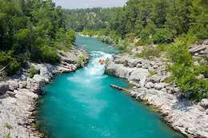

Alex's performance as a raft guide was outstanding. Her dedication to safety, strong leadership, and ability to create a fun and engaging experience left a positive impression on all participants. With a few minor improvements, Alex has the potential to become one of the top guides in the team.

Whitewater Rafting
History
Whitewater rafting can be traced back to 1811 when the first recorded attempt to navigate the Snake River in Wyoming was planned. With no training, experience, or proper equipment, the river was found to be too difficult and dangerous. Hence, it was given the nickname "Mad River". On June 9, 1940, Clyde Smith led a successful trip through the Snake River Canyon.
In 1843 lieutenant John Fremont introduced the first rubber raft in US. Later on in 1844 the further enhancements were made by Peter Halkett. These vessels greatly facilitated whitewater navigation. It lasted for many years, with improvements in craftsmanship and safety over time.
Adventure Awaits You!